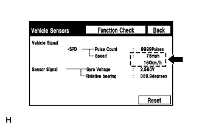

DTC B15C2 Speed Signal Malfunction |
| DTC Code | DTC Detection Condition | Trouble Area |
| B15C2 | A difference between the GPS speed and SPD pulse is detected. |
|
| 1.CHECK VEHICLE SENSOR (OPERATION CHECK) |
|  |
Enter "GPS & Vehicle Sensor" (Vehicle Sensors) (Click here).
While driving the vehicle, compare the "SPD" indicator to the reading on the speedometer. Check if these readings are equal or almost equal.
|
| ||||
| OK | ||
| ||